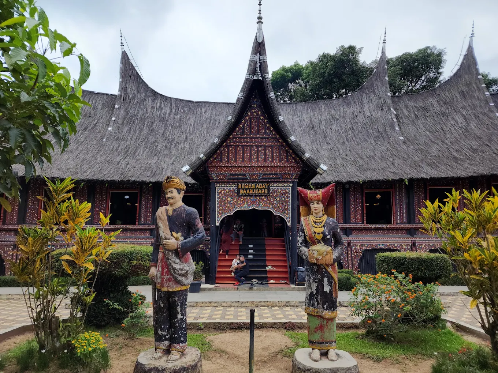
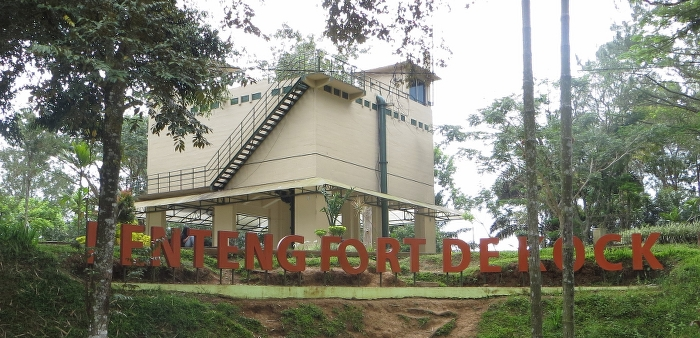

Bukittinggi tidak hanya terkenal dengan Jam Gadang dan udaranya yang sejuk. Di jantung kota ini, terdapat sebuah kawasan wisata sejarah dan edukasi yang luar biasa unik. Kawasan ini mengintegrasikan tiga aset budaya sekaligus: Taman Marga Satwa dan Budaya Kinantan (TMSBK), Benteng Fort de Kock, dan Jembatan Limpapeh.
Ketiganya bukan sekadar tempat rekreasi biasa, melainkan saksi bisu perjalanan sejarah Indonesia yang masih kokoh berdiri hingga era modern ini.
Menjawab Fakta: Kebun Binatang Tertua di Indonesia dan Asia Tenggara?
Banyak orang bertanya-tanya mengenai status senioritas dari kebun binatang ini. Mari kita bedah faktanya secara akurat berdasarkan catatan sejarah resmi.
Kebun Binatang Tertua di Indonesia? Ya, Benar. TMSBK sebagai kebun binatang tertua yang dibangun di atas tanah Indonesia yang masih beroperasi hingga saat ini.
Kebun Binatang Tertua di Asia Tenggara? Tidak Sepenuhnya Benar. Jika skalanya Asia Tenggara, status tertua dipegang oleh Saigon Zoo and Botanical Gardens di Vietnam yang didirikan oleh Prancis pada tahun 1864, disusul oleh Kebun Binatang Taiping di Malaysia (1880). Namun, TMSBK tetap menjadi salah satu yang paling awal dan paling historis di kawasan regional ini.
Bukti Sejarah dan Tahun Berdiri
TMSBK didirikan pada tahun 1900 (beberapa catatan pelengkap mencatat digitalisasi operasional penuhnya selesai pada tahun 1929 oleh pemerintah Hindia Belanda).
Bukti otentik pendiriannya diprakarsai oleh Graaf van den Bosch, seorang Asisten Residen Agam pada masa kolonial. Awalnya, tempat ini dinamakan Stormpark (Taman Kebun Bunga). Kebun ini dibangun di atas Bukit Cubadak Bungkuak dan awalnya berfungsi sebagai taman bunga mewah sebelum akhirnya diisi oleh koleksi satwa liar dan beralih fungsi menjadi kebun binatang resmi.
Sejarah Lengkap, Asal-Usul, dan Fungsi Tiga Ikon Kinantan

Kawasan ini sangat unik karena menghubungkan dua bukit bersejarah yang dipisahkan oleh jalan raya besar melalui sebuah jembatan gantung legendaris. Berikut adalah detail sejarah dari masing-masing elemen:
Taman Marga Satwa dan Budaya Kinantan (TMSBK)
Asal-usul: Berawal dari taman botani kolonial (Stormpark) pada tahun 1900, tempat ini perlahan bertransformasi menjadi kebun binatang seiring bertambahnya koleksi satwa eksotis Sumatra. Pada tahun 1935, dibangun sebuah Rumah Adat Baanjuang di dalam kawasan taman oleh kontrolir Belanda saat itu, yang memperkuat nilai budaya lokal Minangkabau di dalamnya.
Fungsi dan Manfaat: Sebagai lembaga konservasi satwa ex-situ (di luar habitat asli), pusat edukasi botani dan zoologi, sarana pelestarian budaya Minangkabau melalui museum adat, serta penggerak utama ekonomi pariwisata Kota Bukittinggi.
Julukan Keren: "Taman Margasatwa Tertua Nusantara" atau "Jantung Konservasi Ranah Minang".
Benteng Fort de Kock
Asal-usul: Benteng pertahanan ini dibangun jauh sebelum kebun binatang ada, yaitu pada tahun 1825 oleh Kapten Bouwer. Benteng ini dinamai "Fort de Kock" untuk menghormati Hendrik Merkus de Kock, seorang Baron dan Jenderal Belanda yang menjadi Komandan Militer di bawah Pemerintah Hindia Belanda.
Sejarah Perang: Benteng ini menjadi basis pertahanan militer Belanda yang sangat vital selama Perang Padri (1821-1837) melawan Tuanku Imam Bonjol dan pasukannya. Benteng ini berdiri di atas Bukit Jirek untuk mengawasi pergerakan masyarakat lokal.
Fungsi dan Manfaat: Dahulu berfungsi sebagai benteng pertahanan militer dan pos pengawasan taktis. Saat ini, fungsinya telah berubah total menjadi cagar budaya nasional, monumen edukasi sejarah perjuangan bangsa, serta gardu pandang lanskap keindahan kota.
Jembatan Limpapeh
Asal-usul: Jembatan gantung megah ini dibangun pada tahun 1995. Nama "Limpapeh" diambil dari bahasa Minang yang merujuk pada tiang tengah bangunan rumah adat, yang secara filosofis melambangkan sosok ibu atau wanita utama dalam sistem kekerabatan matrilineal Minangkabau yang memperkokoh keharmonisan keluarga.
- Fungsi dan Manfaat: Fungsi utamanya secara struktural adalah sebagai penghubung pedestrian yang aman antara Bukit Cubadak Bungkuak (lokasi TMSBK) dengan Bukit Jirek (lokasi Benteng Fort de Kock). Secara estetika, jembatan ini berfungsi sebagai landmark arsitektur ikonik yang menawarkan spot foto estetik berskala besar bagi wisatawan lintas generasi.


Karakteristik, Ciri Khas, dan Fasilitas Kawasan
Kawasan wisata terpadu ini memiliki ciri visual dan operasional yang sangat khas, memadukan nuansa kolonial, alam liar, dan tradisi lokal.
Karakteristik dan Ciri Khas
Topografi Perbukitan: Berada di atas dua bukit tinggi, membuat kawasan ini memiliki udara yang sangat sejuk, berkabut di pagi hari, dan memberikan pemandangan 360 derajat ke arah Gunung Marapi dan Gunung Singgalang.
Arsitektur Hibrida: Perpaduan gaya arsitektur kolonial Belanda yang kaku dan kokoh (pada benteng) dengan keanggunan atap bagonjong khas Minangkabau (pada museum dan jembatan).
Fasilitas dan Tempat Menarik di Dalam Kawasan
Zona Satwa (Zoo Area): Area konservasi yang menampung berbagai satwa dilindungi, seperti Harimau Sumatra, Gajah Sumatra, beruang madu, aneka reptil, dan aviary (kandang burung besar) yang menjadi rumah bagi burung-burung eksotis.
Museum Rumah Adat Baanjuang: Sebuah rumah gadang asli berukuran besar di dalam kebun binatang. Di dalamnya terdapat koleksi benda bersejarah, pakaian adat, alat musik tradisional, hingga benda-benda kuno peninggalan kebudayaan Minangkabau.
Monumen Benteng Fort de Kock: Bangunan benteng bercat putih-hijau setinggi dua lantai yang dilengkapi dengan meriam-meriam kuno peninggalan abad ke-19 di sekeliling halaman benteng.
Jembatan Gantung Limpapeh: Jembatan sepanjang kurang lebih 90 meter dengan desain atap gonjong di bagian tengahnya. Berjalan di atasnya memberikan sensasi goyangan lembut yang memacu adrenalin, sekaligus pemandangan super indah ke arah jalan raya di bawahnya.
Fasilitas Pendukung Modern: Area jalur pejalan kaki yang ramah keluarga, bangku taman di bawah pohon rindang, pusat kuliner lokal, kios suvenir kerajinan tangan, toilet bersih, dan spot foto instagramable yang ramah untuk konten kreator Gen Z dan Millennial.
Rangkuman dan Kesimpulan Utama
Kawasan wisata terintegrasi yang meliputi Taman Marga Satwa dan Budaya Kinantan (TMSBK), Benteng Fort de Kock, dan Jembatan Limpapeh adalah simbol harmoni yang sempurna antara tiga lini masa: masa lalu kolonial (benteng), pelestarian alam dan budaya (kebun binatang & museum), serta infrastruktur modern (jembatan).
Sebagai kebun binatang tertua di Indonesia yang lahir sejak tahun 1900, kawasan ini berhasil mempertahankan eksistensinya melewati berbagai zaman. Tempat ini bukan hanya sekadar destinasi liburan akhir pekan yang seru, melainkan ruang kelas terbuka yang sangat kaya akan nilai sejarah perjuangan, ilmu pengetahuan alam, dan keluhuran budaya nusantara yang wajib dijaga oleh seluruh generasi.